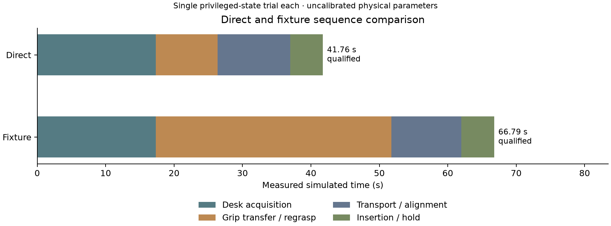

FRANKA FR3 · ISAAC SIM 6.1 · EXPERIMENT RECORD
Both direct and passive-fixture strategies passed the independent geometric insertion and grip audits. Watch the actual simulation recordings below.
New: Pi 4 + Camera Module 3 CAD and cable renders are available in a separate static review. Perception and contact validation remain open.
Historical scope: one deterministic trial per strategy, using exact simulated state and uncalibrated material/contact parameters. The assumed open slot has no terminal-spring resistance. These results do not establish latch closure, electrical continuity, hardware performance or reliability.
| Verified measure | Direct | Fixture |
|---|---|---|
| Full-tip seating depth | 3.80105 mm | 3.80099 mm |
| Maximum sampled pre-insertion grip drift | 1.32 µm | 1.93 µm |
| Verified stage clips | 16 | 23 |
17 regression tests passed. Source hashes, decoded recordings and physics-clock checks accompany the selected runs. Recorded 27 September 2026.
41.76 simulated seconds · 16 stages · 1.32 µm sampled grip drift
Video / clock checks · Grip audit · Seating audit · Recorded results · Handling plot
66.79 simulated seconds · 23 stages · 1.93 µm sampled grip drift
Video / clock checks · Grip audit · Seating audit · Recorded results · Handling plot
Acquisition, pinch, vacuum release and a further raise
Video / clock checks · Grip audit · Recorded results · Handling plot
46.081 mm sag versus 46.132 mm independent nominal reference
Video / clock checks · Recorded results · Cable validation plot
Seven recorded stages; both actuator strokes approximately 18 mm
Settling and tool exercise only; full handling not qualified

Direct is the initial control baseline; the fixture branch remains available for future tests with uncertain cable poses. These timings reflect the chosen simulation controllers, not predicted hardware cycle times.
Comparison data